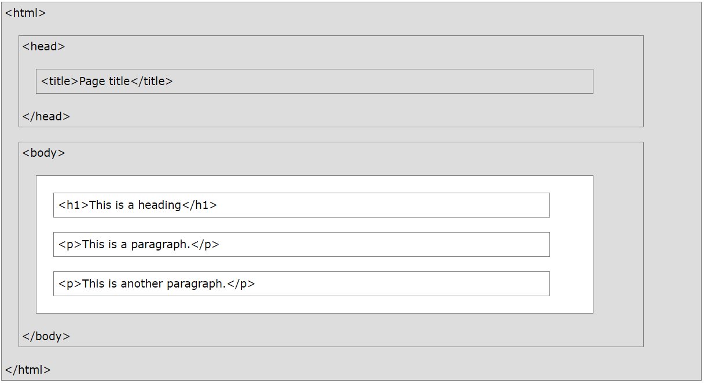

Etiquetas Básicas de HTML
Imagen 1. Estructura basica de HTML. Tomado de https://www.w3schools.com/html/html_intro.asp
HTML o sus siglas en inglés Hyper Text Markup Language o Lenguaje marcado de hipertexto, es basicamente un estandar para maquetar o definir la estructura base de una página web. HTML hace uso de elementos también llamados TAGS los cuales son un conjunto de palabras reservadas que tienen una apertura y un cierre (en algunos casos no) que permite definir demanera estructurada los diferentes contenidos que tendrá una página web. También es conocida como el esqueleto de una web.
Se definirán las etiquetas básicas que se pueden utilizar
Etiquetas básicas:
- Etiqueta HTML: Es la etiqueta principal o raíz de una página HTML.
- Etiqueta head: Permite definir metadatos o el "acerca de" de una página HTML.
- Etiqueta title: Permite definir el titulo que se despliega en la pestaña de un navegador
-
Etiqueta body: Permite estructurar el cuerpo de una página HTML, en está irian condensadas otras etiquetas
para darle estructura y contenido a la página. Entre estas tenemos las siguientes:
- Etiqueta p: Permite definir un parrafo.
- Etiqueta h#: Permite definirle a un texto el tamaño por defecto que puede llegar a tener, teniendo en cuenta el contenido de la página, por ejemplo, un subtitulo. El # indica el tamaño, a menor sea el valor mayor es el tamaño del texto.
- Etiqueta ul: Permite definir listas sin un orden especifico.
- Etiqueta ol: Permite definir listas ordenadas.
- Etiqueta li: Es el elemento que acompaña a las listas ordenadas o no ordenadas y de acuerdo a la etiqueta principal, es decir, si es ol o ul, se marcará este elemento con un simbolo o con una enumeración.